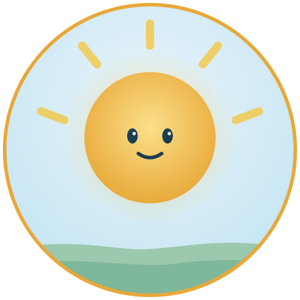
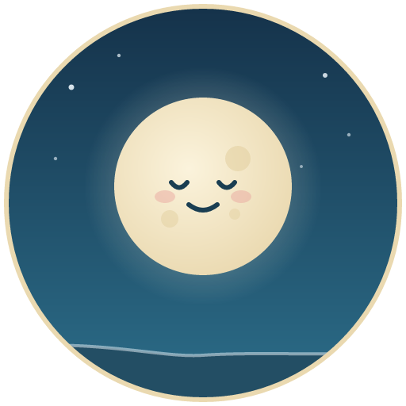
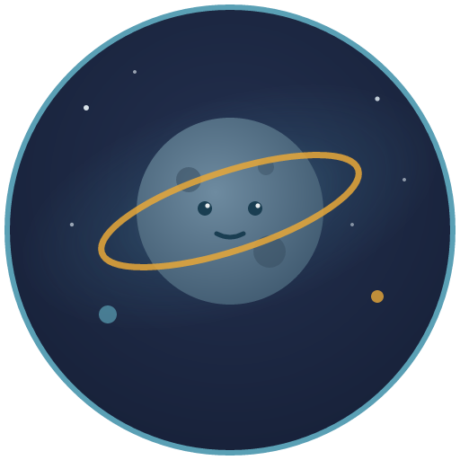
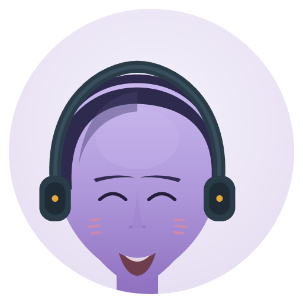
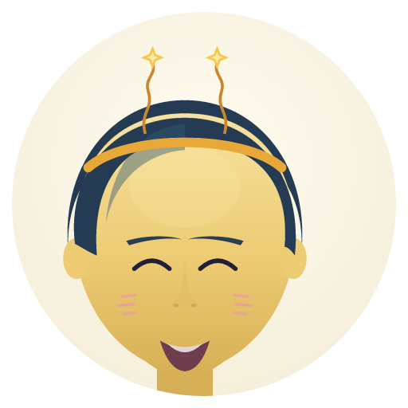

A universal emotional language, a team of guides who feel like friends, and a whole world of lessons, games, and tools — all in one app.
Three companions, three strengths — so it feels less like using an app and more like talking to a friend and learning with a coach. They remember you, adapt to your pace, take turns, and never judge.

Structure, focus, and momentum. Sol helps you set goals, spot patterns, and keep going — truth told kindly, every win celebrated.

Warmth and emotional safety. Luna makes it easy to open up, sits with you in the hard moments, and gets you like a real friend.

Calm, clear, and wise. Asteroid breaks down the tricky stuff, settles conflict, and guides your advanced learning.
Your guides each have a voice of their own — here's a taste of how they show up for you.

"Let's break this into small steps — you don't have to do it all at once."
"I noticed a pattern. Want to look at it together?"
"Progress counts — even the tiny kind. I saw that."

"Whatever you're feeling right now is okay. Let's name it together."
"You don't have to explain it perfectly — I'm here."
"That was brave. I'm proud of you."
"Let's slow down and look at what actually happened."
"Emotions have patterns. Once you see them, they make sense."
"No judgment here — just understanding."
A universal vocabulary for emotion — what you feel, how you feel it, and why. Each entry comes with a plain-language meaning, the body signals to notice, and real-life examples. Learn it word by word, and carry it into everyday life.
Understanding Humans is built as an interactive world — three realms you move through as you grow, with collectibles, daily check-ins, and lessons that feel like play.
Warm and sunlit. Lessons bloom as glowing tasks; collect Sun Shards as you grow.
Calm and starlit. Emotional check-ins appear as constellations; collect Star Fragments.
Deep space and discovery. Advanced challenges appear as data spheres; collect Knowledge Crystals.
Dozens of modules across every area where understanding matters — mix and match what you need.
Name emotions, build your vocabulary, decode body signals, and do daily check-ins.
Scripts for adults, youth, and kids; tone and context, boundaries, and repair.
De-escalate, repair after rupture, and resolve conflict at home, school, or work.
Trauma-informed basics, self-compassion, grounding, and the overwhelm button.
Sensory awareness, ND communication tools, and pattern-based learning.
Kid-friendly basics, routines, family time, and ‘teach the AI’ mode.
Class and team tools, burnout awareness, and respectful communication.
Trigger mapping, craving cycles, group check-ins, and rebuilding.
Micro-expressions, pattern mapping, and the science of reading emotion.
You build real skills by playing — alone or with the people in your life.
Beyond lessons, each version includes tools that help day to day — customizable to where it's used.
When you're ready, level up into the science of reading emotion — micro-expressions, pattern mapping, emotional logic, and the careers these skills strengthen.
Every screen in Understanding Humans™ includes our 7 self-describing ClearPlus™ agents (plus the ClearStep large-target UI primitive). Each agent clearly states Who It’s For and What It Does — and can be licensed by other app companies as a drop-in SDK for already-made apps.
Who it’s for: Non-speaking, minimally verbal, or situational-mutism users.
What it does: Floating 📣 Say pill opens a tap-to-speak AAC symbol board, custom emergency phrases, text-to-speech output, and plain-language AI guides.
Who it’s for: Deaf, hard-of-hearing, or anyone who cannot make a voice call.
What it does: Floating 💬 Sign pill gives 1-tap text (988 SMS), web chat, 711 TTY relay, and VRS/ASL videophone crisis routes from every screen.
Who it’s for: Blind, low-vision, and eyes-free users.
What it does: Floating 👁 Hear + 🎤 Speak pills narrate the screen aloud, list every interactive button, and run hands-free spoken commands.
Who it’s for: Older adults, seniors, and cautious tech users.
What it does: Explains what any button does before you click it, checks suspicious phone calls, emails, and texts for scams, and adjusts text size (1.0×–1.65×), high contrast, button/icon size, and spacing.
Who it’s for: Paralyzed users (ALS, spinal cord injury, stroke, CP) who use their eyes or a single switch.
What it does: Hands-free dwell-to-click countdown ring (0.8s–2.0s), top Eye-Bar dock, single-switch auto-scanning, and ClearStep 48×48dp hit targets.
Who it’s for: Autistic users, migraine sufferers, and anyone in sensory overload.
What it does: Turns the app down one sensory input per tap (motion, colour brightness, visual density) with 1-tap undo and automatic device preference matching.
Who it’s for: Readers with dyslexia, ADHD, brain-fog, or post-concussion fatigue.
What it does: Movable horizontal Reading Ruler spotlight band that tracks your finger/cursor, dyslexia-friendly letter/word/line spacing, and a 1-step task anchor.
Who it’s for: Users with hand tremors, motor fatigue, or eye-gaze pointers.
What it does: Shared UI foundation enforcing 48×48dp minimum hit targets and zero multi-step confirmation traps across all 7 ClearPlus™ overlays.
Include ClearPlus™ in your app: Any app company can drop individual ClearPlus™ overlays or the full 7-agent suite into existing Flutter, Web, iOS, or Android apps in minutes. View SDK details →
Be part of it from the start. Understanding Humans is more than an app — it's a movement to make emotional clarity a normal part of everyday life.